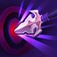

2018-09-04 Rework Diffs
Looking for an overview of changes from a recent hero rework? You've found the place. Green stuff is new, red has been removed. Refer to the Legend below for specifics on box and line highlights.
Legend
-
New
This talent is all shiny and new, and completely green in color -
Changed
UpdatedThe green highlights indicate the new descriptionWhile the red highlights show what the description used to say -
Moved
Moved from level XThis talent has been moved levels; it will have a blue label describing the move.Will generally be followed by a red section listing the old description too -
Unchanged
These white boxes are exactly as they were before; nothing changed here -
Removed
This removed talent is entirely red and sad because it no longer exists for this hero :(
Tyrande
Developer Comment: While we enjoy the flexibility of Tyrande's kit, she has struggled to find a home in the current meta. As we started looking at broadening our Hero roles, we felt like we had an opportunity to make some simple yet very substantial changes to our Night Elf Priestess. This rework pulls her slightly away from her hybrid status, reducing her damage output potential while introducing a lot more healing potential. While she keeps the vast majority of her older talents, they have been updated and shuffled to better coincide with her changes. We have enjoyed playing her internally and are excited to see what our players can do with her!
- Basic Attack damage reduced from 82 to 55
- Basic Attack range increased from 5.5 to 6
Abilities
-
Light of Elune
UpdatedMana: 10 30 Cooldown: 15 11Heal target allied Hero for 275 ally for 270 (+4% per level) Health. Stores up to 2 charges. Light of Elune's cooldown replenishes all charges at the same time. Passive: Basic Attacks lower the cooldown of this Ability by 1.5 2 seconds. Passive: Damaging Heroes with Abilities lowers the cooldown of this Ability by 1.5 seconds. -
Sentinel
UpdatedMana: 50 70 Cooldown: 15 18Send an Owl across the battleground revealing its path, dealing 120 165 (+4% per level) damage to the first Hero hit, and revealing them for 5 seconds.Repeatable Quest: Every 8 Heroes hit by Sentinel decrease its Mana cost by 10 and cause it to pierce an additional target. -
Lunar Flare
UpdatedMana: 60 Cooldown: 12After 0.75 seconds, deal 150 195 (+4% per level) damage and Stun enemies in the target area for 0.75 seconds. -
Shadowstalk
UpdatedMana: 75 40 Cooldown: 80 20Grant all allied Heroes Stealth for 10 seconds and heal them for 400 (+4% per level) Health over 10 seconds. Remaining stationary for at least 1.5 seconds while Stealthed grants Invisible.Stealth and gain 30% Movement Speed. When Shadowstalk's Stealth is broken, gain 50% Attack Speed and retain its Movement Speed bonus for 5 seconds. -
Starfall
Mana: 75 Cooldown: 80Deal 88 (+4% per level) damage per second and slow enemies by 20% in an area. Lasts 6 seconds. -

Hunter's Mark
UpdatedCooldown: 20Reveal a non-Structure enemy and reduce their Armor by 15 25 for 4 seconds.
Talents
1
-
Celestial Attunement
Moved from level 4Light of Elune removes Stuns, Silences, and Slows from its target. When a Stun or Silence is removed this way, Light of Elune may be used for free within 4 seconds. This free cast cannot benefit from Celestial Attunement. -
Kaldorei Resistance
Moved from level 4Light of Elune grants the target 15 Spell Armor for 3 6 seconds. This effect stacks up to 2 3 times. -
Moonlit Arrows
Moved from level 4Basic Attacks decrease the cooldown of Light of Elune by an additional 0.25 0.75 seconds.
4
-
Lunar Blaze
Moved from level 1Increase Lunar Flare's range by 50%. Repeatable Quest: Hitting a Hero with Lunar Flare increases its damage by 5%, up to 100% 3%. Reward: After hitting 10 Heroes, Lunar Flare no longer has a Mana cost. Reward: After hitting 20 Heroes, increase the range of Lunar Flare by 40%. -
Ranger
Moved from level 1Cooldown: 30Activate to make the next Sentinel pierce through all Heroes hit. Passive: Sentinel's width is increased by 25% and deals up to 150% 75% more damage based on distance traveled. Repeatable Quest: Hitting enemy Heroes with Sentinel increases the maximum damage bonus by 3%. -
Trueshot Aura
Moved from level 7Cooldown: 60Activate to reset the cooldown of Hunter's Mark and grant 20% increased Basic Attack damage to nearby allied Heroes for 5 seconds. Passive: Basic Attack damage increased by 20%.Passively grant 10% increased Attack Damage to nearby allied Heroes. Activate to double this bonus for 5 seconds.
7
-

Elune's Chosen
Moved from level 16Cooldown: 30Activate to make Tyrande's Basic Attacks heal the target ally for 200% of the damage dealt. Lasts for 10 5 seconds. -
Everlasting Light
If Light of Elune's second charge is cast on a different target from the first, it heals for 40% more. -
Mark of Mending
Moved from level 16Tyrande's Basic Attacks heal her for 2% of her maximum Health. Basic Attacks against targets with Hunter's Mark heal the attacker for 2% of their maximum Health.
10
-
Shadowstalk
UpdatedCooldown: 80 20Grant all allied Heroes Stealth for 10 seconds and heal them for 400 (+4% per level) Health over 10 seconds. Remaining stationary for at least 1.5 seconds while Stealthed grants Invisible.Stealth and gain 30% Movement Speed. When Shadowstalk's Stealth is broken, gain 50% Attack Speed and retain its Movement Speed bonus for 5 seconds. -
Starfall
Cooldown: 80Deal 88 (+4% per level) damage per second and slow enemies by 20% in an area. Lasts 6 seconds.
13
-
Harsh Moonlight
UpdatedSentinel Slows the first target hit by 40% 25% and reduces their damage dealt by 40% 25% for 4 seconds. -
Quickening Blessing
UpdatedGain 10% Movement Speed. Light of Elune increases the target's Movement Speed by 20% 30% for 3 seconds. -
Ranger's Mark
Moved from level 1Basic Attacks reduce the cooldown of Hunter's Mark by 1 second. Basic Attacks against marked targets increase the duration of Hunter's Mark by 0.5 seconds.Repeatable Quest: Every 50 Basic Attacks against enemy Heroes increase the duration of Hunter's Mark by 1 second.
16
-

Darnassian Archery
Moved from level 7Basic Attacks against enemy Heroes grant a stacking 10% 5% increased Attack Damage bonus for 8 4 seconds. This bonus is lost when Basic Attacking non-Heroes. -
Empower
Moved from level 13Reduce Sentinel's cooldown by 3 2 seconds. The first Hero hit by Sentinel takes bonus damage equal to 7% of their maximum Health. Reduce Sentinel's cooldown by 2 seconds. Every time it hits a Hero, reduce its cooldown by an additional 4 seconds. -
Huntress' Fury
Moved from level 7Increase the cast range and duration of Hunter's Mark by 25% 50%. Tyrande's Basic Attacks against targets with Hunter's Mark splash to nearby enemies Heroes and Mercenaries. -
Overflowing Light
While Tyrande is above 60% Health, Light of Elune's healing is increased by 30%.
20
-
Celestial Wrath
Starfall applies Hunter's Mark to enemy Heroes while inside of its area of effect. -
Eyes of the Huntress
UpdatedShadowstalk reveals all enemy Heroes for 2 seconds and heals allies below 50% Health for 50% more.After casting Shadowstalk, reveal all enemy Heroes for 3 seconds. -

Iceblade Arrows
Increase Attack Speed by 25%. Basic Attacks against enemy Heroes reduce their damage dealt by 8% for 2 seconds. This effect stacks up to 5 times. -
Shooting Star
UpdatedIncrease Basic Attack range by 1 1.1. Every 8th 10th Basic Attack casts a free Lunar Flare at a random enemy Hero near Tyrande's position. This prefers Heroic targets.